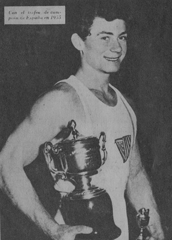

Joachin Blume (ESP)

1957 European AA Champion
The son of a German father and Spanish mother, Joachin was born in Barcelona on June 21, 1933. Due to the Spanish Civil War, the family moved to Germany in 1939. They returned to Spain in 1942. He married Maria Jose Bonet on May 22, 1958. On the way to give a gymnastics exhibition, Blume, his wife and other members of the Spanish team were killed in a plane crash on April 29, 1959.
Competition Results
1949
ESP Championships: 1st AA
1950
ESP Championships: 1st AA
1951
ESP Championships: 1st AA
1952
ESP Championships: 1st AA
Genoa International: 4th AA, 2nd PB, 2nd HB
Olympic Games: 56th AA
1953
ESP Championships: 1st AA
Hamburg International: 56th AA
1954
ESP Championships: 1st AA
World Championships: 44th AA
1955
ESP Championships: 1st AA
European Championships:
10th AA
Mediterranean Games: 1st AA
1956
ESP Championships: 1st AA
Lisbon International: 1st AA
1957
ESP Championships: 1st AA
ESP-SUI-FRA Tri-Meet: 1st AA
European Championships: 1st AA, 1st PH, 1st R, 1st PB, 2nd HB, 4th FX, 5th VT
1958
ESP Championships: 1st AA
Munich Gymnastics Festival: 1st AA
This page was created on Jan. 18, 2015.
© Gymn Forum